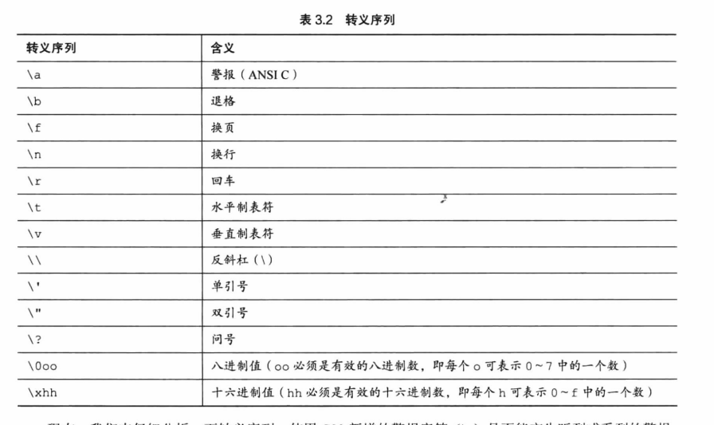

c语言中的输出(打印)语句是printf 就因为这个我找了快一个钟的错误 ****
c语言
#include <stdio.h> (头文件)
将stdio.h文件中的内容拷贝入include文件中
根据c实现文档中对c库函数的说明,确定函数所对应的头文件int main(void) (标准格式) #部分编辑器void main()也是对的
int main()函数返回的类型
() 内容包含一些传入函数的信息,无传入的信息时,()内为void
main函数首先调用 其他函数的调用顺序是看其在main函数中的位置
语义错误调试办法:
- 模拟程序,监听程序状态,就是每一步去跟着代码语句走,过一遍
- 在关键点打上输出语句print() 看看有没有出错
- 人类的长处 借助debugger调试器 步步运行,检查程序变量的值
进制转换:%d %o %x
要想显示各进制数前缀0 0x 0X 必须分别使用%#o %#x %#X
char类型: 用于存储字符 整数类型
计算机使用编码(常用ASCII)来处理字符 ASCII～(0,127)
即用特定的整数来表示特定的字符,例如65代表大写的A
char grade = ‘A’;非打印字符(要用再查找 记住几个重要 经常要用的就行)
\、'、" 打印 \、’、” 不能直接使用
打印Gramps sez,”a \ is a backslash.”
printf(“Gramps sez, "a \ is a backslash."\n”)
可移植类型的头文件: 确保c语言的类型在各系统中的功能相同
#include <stdiot.h>
#include <inttypes.h> 定义了PRId32字符串宏 代表打印32位有符号值的合适转换说明(d/l)
例子:
#include <stdio.h>
#include <inttypes.h>
int main(void)
{
int32_t me32; // \n
me32 = 445933945;
printf(“First,assume int32_t is int: “);
printf(“me32 = %d\n”,me32);
printf(“Next,let’s ont make any assumptions.\n”)
printf(“Instead,use a "macro" from inttypes.h: “);
printf(“me32 = %” PRId32 “\n”,me32);// \n
return 0;
}
printf(“me32 = %” “d” “\n,me32);→printf(“me32 = %d\n,me32);
- sizeof(int/char/long) 可查看类型大小
#C语言中定义了char类型是1字节,所以char类型的大小一定是1字节.而在char类型为16位、double类型为64位的系统中,sizeof给出的double是4字节. - 系统化命名约定
i_前缀表示int类型 i_smart
us_表示unsigned short类型 us_versmart
c标准规定了printf当缓冲区满、遇到换行字符或需要输入的时候把缓冲区中的内容发送到屏幕 fflush();函数也可以刷新缓冲区
%集合:
%a,%A 读入一个浮点值(仅C99有效)
%c 读入一个字符
%d 读入十进制整数
%i 读入十进制，八进制，十六进制整数
%o 读入八进制整数
%x,%X 读入十六进制整数
%s 读入一个字符串，遇空格、制表符或换行符结束。
%f,%F,%e,%E,%g,%G 用来输入实数，可以用小数形式或指数形式输入。
%p 读入一个指针
%u 读入一个无符号十进制整数
%n 至此已读入值的等价字符数
%[] 扫描字符集合
%% 读%符号